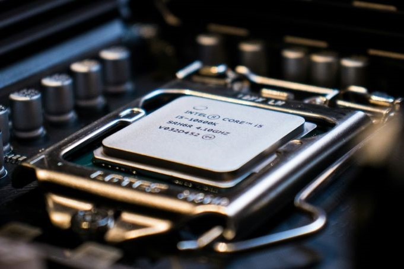
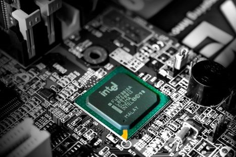

CPU - Features
Definition
A central processing unit (CPU) is a hardware component that’s the core computational unit in a computer. Computers and other smart devices convert data into meaningful information through the CPU’s processing power. The CPU is the brain of a computer, responsible for executing instructions and performing calculations. It is the main component that acts as the control center of a computing device, working alongside other hardware components to enable the device to function effectively. The CPU, also known as the central processor or main processor, is crucial for processing input, storing data, and producing output results. It is the primary component that defines a computing device’s capabilities and performance.
Features of a CPU
1. Clock Speed
The Clock speed is a crucial metric that determines how many instructions a CPU can execute per second, measured in Hertz (Hz) or Gigahertz (GHz). It represents the frequency at which the CPU’s internal clock generates pulses to synchronize operations. A higher clock speed generally indicates faster processing capabilities, allowing for quicker execution of tasks. Over time, advancements in technology, such as Moore’s Law, have led to significant increases in clock speeds, with modern processors typically operating at frequencies ranging from 3 to 4.00GHz. The concept of clock speed is essential in understanding a CPU’s performance and efficiency, as it directly impacts the speed at which computations are carried out, influencing the overall responsiveness and capabilities of a computing device.
2. Cores
The cores are the smallest physical hardware units within a CPU responsible for executing tasks and processing data. Each core contains an Arithmetic Logic Unit (ALU) and can handle instructions independently, allowing for parallel processing and improved performance. The number of cores in a CPU determines its multitasking capabilities and processing power. Single-core CPUs have one core, while multi-core CPUs like dual-core, quad-core, hexa-core, octa-core, and deca-core processors have multiple cores, enabling them to handle more tasks simultaneously. The concept of multiple cores was introduced to enhance computing efficiency and speed, allowing for better utilization of resources and improved overall performance in modern computing devices.
3. Cache
The cache is a high-speed memory storage unit located within the CPU that stores frequently accessed data and instructions for quick access by the processor. It helps reduce the time taken to fetch data from the main memory, improving the overall performance of the CPU. The cache consists of multiple levels, such as L1, L2, and L3 caches, each with varying sizes and speeds. Inventors like Seymour Cray and important figures in computer architecture, such as John L. Hennessy and David A. Patterson, have contributed to the development and optimization of cache memory in CPUs. The cache plays a crucial role in enhancing the efficiency of the CPU by providing faster access to frequently used data, thereby reducing latency and improving the overall speed and performance of the computing device.
4. Instruction Set
The instruction set is a collection of commands and operations that a CPU can execute. It includes a variety of instructions such as arithmetic operations, logic operations, data movement, and control flow instructions. These instructions are encoded in binary format and are understood by the CPU to perform specific tasks. The instruction set architecture (ISA) defines the machine language that a CPU can understand and execute. Different CPUs have different instruction sets, with variations in the number and types of instructions they support. The instruction set is crucial as it determines the capabilities and functionalities of a CPU, influencing its performance and efficiency in processing data and executing tasks. Key inventors and contributors to the development of instruction sets include John von Neumann, who laid the groundwork for modern computing architecture, and pioneers like John Backus, who created high-level programming languages that translate into machine code instructions for CPUs.
5. Arhitecture
The Architecture is the fundamental design and structure of a central processing unit (CPU) that encompasses various components such as the Control Unit, Registers, Arithmetic Logic Unit (ALU), Memory Management Unit, and Clock. These components work together to execute instructions, perform calculations, manage data flow, and control the overall operation of a computing device. The CPU’s architecture, including features like CPU speed, core count, cache size, virtualization support, and integration, plays a crucial role in determining the device’s capabilities and performance. Different types of CPUs, ranging from single-core to multi-core processors, offer varying levels of processing power and efficiency, impacting the overall computing experience. Innovations in CPU architecture, driven by inventors and researchers like John von Neumann and Alan Turing, have significantly advanced the field of computing, enabling faster and more efficient data processing, which is essential for modern servers, smart devices, and computers.


6. Thermal Design Power (TDP)
The Thermal Design Power (TDP) is a crucial specification that indicates the maximum amount of heat generated by a CPU that the cooling system in a computer needs to dissipate. It is measured in watts and provides an estimate of the amount of power a cooling system must be able to handle under a heavy workload. TDP is significant in determining the appropriate cooling solution for a CPU to ensure optimal performance and prevent overheating. Processors with higher TDP values typically require more robust cooling solutions to maintain stable operation. This metric is essential for system builders and users to consider when selecting components for their computing devices. The concept of TDP was introduced by Advanced Micro Devices (AMD) and has become a standard in the industry for understanding and managing the thermal characteristics of CPUs.
7. Hyper-Threading
Hyper-Threading is a technology developed by Intel that allows a single physical CPU core to execute multiple threads simultaneously. It works by duplicating certain sections of the processor, enabling better performance by allowing the CPU to handle multiple tasks more efficiently. This technology enhances overall CPU performance by improving resource utilization and increasing throughput. Hyper-Threading is significant as it enables a single core to function as if it were multiple cores, thereby enhancing multitasking capabilities and overall system responsiveness. It was first introduced by Intel in 2002 with the Pentium 4 processor and has since been integrated into various Intel CPUs to optimize processing power and efficiency.
8. Overclocking
Overclocking is the process of increasing a CPU’s clock rate beyond its default specifications to achieve higher performance levels. This is typically done by adjusting the CPU multiplier or base clock frequency to make the processor run faster than intended by the manufacturer. Overclocking can lead to improved processing speeds and enhanced system performance, but it also generates more heat and may require additional cooling solutions to prevent overheating. Enthusiasts and gamers often overclock their CPUs to boost performance in demanding tasks such as gaming, video editing, and rendering, pushing the hardware to its limits for increased efficiency and speed.
9. Integrated Graphics
Integrated Graphics are a type of graphics processing unit (GPU) that is integrated directly into the CPU chip, sharing the same silicon die. This integration allows for basic graphical processing capabilities without the need for a separate dedicated graphics card. Integrated Graphics are commonly found in laptops, desktops, and other devices where space, power consumption, and cost are important factors. They are suitable for everyday tasks, light gaming, and multimedia consumption, but may not offer the same level of performance as discrete GPUs. Notable examples of CPUs with integrated graphics include Intel’s processors with Intel HD Graphics or Intel Iris Graphics, and AMD’s processors with Radeon Graphics. Integrated Graphics play a crucial role in providing visual output for computing devices, contributing to the overall user experience and performance of the system.
10. Power Efficiency
Power Efficiency is a crucial metric that measures the ability of a CPU to perform tasks while consuming minimal power. It is a key factor in determining the overall performance and sustainability of a computing device. Power Efficiency is typically expressed in terms of performance per watt, indicating how much computational work a CPU can accomplish for each unit of power consumed. Efficient CPUs help reduce energy consumption, heat generation, and operating costs, making them essential for optimizing the performance and longevity of servers, smart devices, and other computing systems. Innovations in CPU design, such as advancements in architecture, manufacturing processes, and power management techniques, play a significant role in improving Power Efficiency and enhancing the overall functionality of modern computing devices.